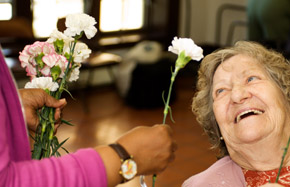

Título
A Santa Casa da Misericórdia de Leiria – instituição com 500 anos de história – renova-se e actualiza-se diariamente. A presença num meio como a Internet é disto um bom exemplo. Com este site, pretende a Misericórdia de Leiria dar a conhecer a todos aqueles que nos visitam as suas valências sociais e os projectos em que estamos envolvidos. Esperamos que aprecie este endereço.